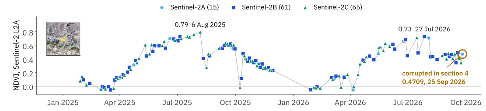
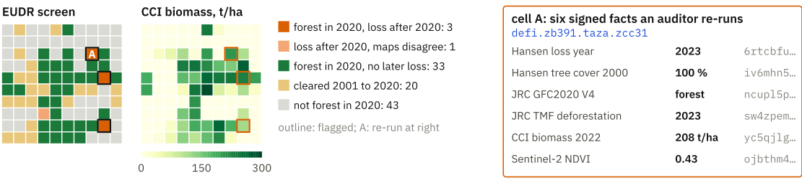
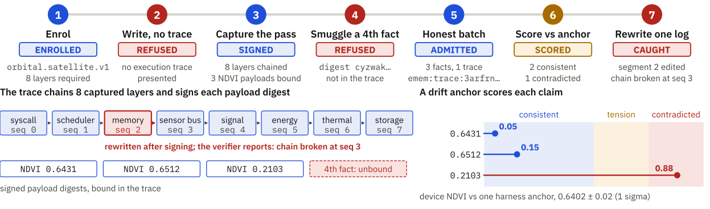

Methods
How the poster's claims were produced, and where each stops. Every number here is read by the build from the file named beside it; the date is the file's measurement or commit date (UTC).
Run the experiments · Find an integration · Resolve a token
The complete system
Observe → locate → record → hand off → resolve → check → continue. The lookup identity is cell, product and observation time. The content address identifies the exact canonical record. An emem:fact:<cell64>:<fact_cid> reference carries the cell and content address; the product and time are fields inside the record.
The two-process handoff in research/repro/data/v8/crossruntime_table.json passes the reference on stdout to a second program, which re-hashes the record, checks the receipt and recomputes NDVI. This is a measured program-to-program handoff, not a ChatGPT-to-Claude conversation.
Detailed figures: verification layers and measured coverage · token grammars and hash rules · SAT-042 reference harness.


SAT-042 is a deterministic test harness, with no spacecraft enrolled. Its admission gate binds the output value digest. Code, model and run fields in the trace do not make that gate a full binding of those identities. The observation handoff does not depend on this extension.
Drift, memory and the tests behind them
Δz = Δ_env + Δ_sensor + Δ_geo + Δ_encoder + ε
For finite output x and anchor a:
d = |x − a|
finite σ > 0: r = d/(3σ); s = r/(1+r)
invalid σ: s = 0 if d = 0, otherwise 1
M = (O*, E*) O = (a, b, t, v, u, p, s)
E = (subject, predicate, object, valid_from, valid_to)
Cτ = TxAsOf(O*, a, b, τ)
latest-as-of recall = max_(t,cid) {O in Cτ : t ≤ t*}Drift: the reference can change during a handoff while the world stands still; a readout at a stable address can also change between visits. The decomposition names world, instrument, alignment, encoder and noise. The implemented attribution ledger associates per-term evidence with a signed receipt; its numeric split is null. The drift-anchor score is a separate disagreement measure. At 3σ it reaches 0.50 (tension); at 9σ it reaches 0.75 (contradicted). Invalid uncertainty includes zero, negative and non-finite σ; it requires exact agreement. The code variable z is renamed r to avoid confusing it with the readout in the decomposition.
Observation: a is the cell, b the typed band, t the valid time, v the value, u the uncertainty, p the provenance (source references, recipe and signing time), and s the associated attestation. This is a conceptual model, not a wire schema: the tested fact record has no individual signature field. Its CID hashes the canonical record bytes; a batch attestation covers the address, and a read receipt separately binds the response. Missing source hashes or uncertainty do not appear merely because the conceptual model names them.
Two clocks: TxAsOf resolves the versions known at signing-time bound τ per cell, band and valid-time slot. In latest-as-of mode, with no exact tslot, recall then selects the latest qualifying valid time ≤ t*, with lexicographic CID order breaking ties; an empty candidate set returns no observation. Exact-slot, unbounded and provenance-filtered reads have their own semantics. The Bengaluru example returns 918.0 m at a 15 June signing-time bound and 915.07 m after a provider change. Both records remain citable. Temporal storage and event sourcing are established techniques; the agent-handoff implication is a portable reference to the exact historically cited record, with receiver-side checks. This does not demonstrate physical ground movement.
Memory operations: recall and diff recover states and compare visits; merge creates a citable set, not an averaged measurement; trace follows versioned recipes and cited inputs; competing retains contradictory evidence; evolve appends and supersedes; ensure reuses or materialises a missing single-hop read; valid assesses product-dependent staleness. Multi-hop planning and causal removal/recomputation remain open. Complete recovery and source notes: research/v13/22_RECOVERED_DESIGN_AND_FORMALISM.md.
Model-output records preserve the metadata actually present. The archived Prithvi vector has 1,024 values and a checkpoint digest inside the hashed record. TESSERA has 128 values and a product-year path, with no checkpoint digest. These encoder bands are retired on the deployment; the poster shows retained records, not current inference. Evidence: research/v13/evidence/critic/cell.json.
Fresh upstream tests: 20 passed, 0 failed, 0 skipped on 2026-10-02, at emem 8e9b401. These are the existing SDK offline receipt and benchmark canonical-encoding tests, run without changes. They accept a genuine receipt and reject changed addresses, request ids, clocks, primitives and Merkle proofs; canonical vectors exercise floats, booleans and CID changes. Results: research/v13/evidence/formalism/test_results.json, research/v13/evidence/formalism/offline_tests.txt. Exact source files, hashes and commit links: research/v13/evidence/formalism/sources.json.
Archived Rust tests: the 30 September emem-trace run at 04b40c5 has 22 passed and one deliberately ignored timing test. It includes drift thresholds, missing uncertainty, trace chaining, output binding and signature rejection. The separately filtered storage run has 23 passed. These are retained results, not fresh executions here: research/repro/v12/trace/emem_trace_tests.txt. The temporal tests at the current pinned commit exercise both time bounds, their intersection, empty results and historical reads. Their source was inspected; no Rust test was re-run for this poster.
Next experiments: use controlled scene, pixel and encoder changes to test numeric attribution, wire device outputs to recalled Earth anchors, and repeat checked handoffs between separately operated agent hosts. The two-process result does not establish a cross-host agent conversation. Remaining scope: research/v13/16_FORMALISM_AND_TEST_AUDIT.md.
Research questions behind the experiments
Can a receiver detect altered evidence without trusting the sender? Which changes become visible at each verification depth? How do prose, JSON, retrieval, an opaque id and a checked reference compare? What remains inherited when the cited record is intact? The experiments below separate these questions from the poster's explanatory flow.
Contents: record · ladder · threat model · R1 · R5 · M15 sample · demo · cost · prior art · references
1 · The record and its content address
An EMEM fact is one observation record: cell, band, UTC day (tslot), value, confidence, sources (scheme, id or URL, capture time), derivation (function key and arguments such as scene id, EPSG code, DNs, BOA offset and catalogue), privacy class, schema cid, signer and signing time. It is encoded as CBOR. Its name is
fact_cid = base32(BLAKE3-256(record bytes)) 52 charactersA token adds the cell: emem:fact:<cell>:<fact_cid>. The record has no signature of its own. The operator's key signs PreimageV1("attestation"){batch_root, registry_cid, schema_cid}, where batch_root is a Merkle root over the BLAKE3 hashes of a batch of records, and the attestation is an entry in an RFC 6962-style log. The record names its upstream file by scene id and URL and binds none of its bytes, so a receiver checks the source by re-reading it. Field by field: INSPECT THE RECORD.
A receiver must hash the bytes it received. Decoding and re-encoding with a generic CBOR library gives other bytes and would refuse every genuine record (report 09, §3.2).
2 · The verification ladder
"Verified" is never used alone. Each check names its layer.
| layer | question | check | status | R1 first refusal |
|---|---|---|---|---|
| L0 record integrity | Are these the exact bytes the pinned key attested and logged? | resolve, re-hash, attestation signature and batch root, log inclusion and consistency | CHECKABLE | M1, M2, M3, M7, M8 to M13, M16 |
| L1 observation identity | Does the record describe the cell, band and time I asked about? | record fields against the token and the question | CHECKABLE (declared fields) | M4, M5, M6 |
| L2 derivation | Does the value follow from the recorded inputs by the named function? | recompute from fn_key and args, compare IEEE-754 bits | RECOMPUTABLE where the inputs are in the record, else INHERITED | M14 |
| L3 source | Do the recorded inputs equal the named upstream file at the named pixel? | re-read the pixel; catalogue metadata; byte-range witness | PARTIAL: no upstream hash is bound | M15 (only the re-read catches it) |
| L4 entity | Is this cell the thing the sender meant? | none | OUT OF SCOPE | M17 accepted at every depth |
| L5 truth, decision | Is the value right about the world, and is acting on it right? | none | OUT OF SCOPE (decision); INHERITED (product accuracy) | none |
Status words: CHECKABLE (decided offline with stock libraries), RECOMPUTABLE (re-executed or re-read and compared bit for bit), INHERITED (rests on the signer or the producer), PARTIAL, OUT OF SCOPE. Source: research/v13/10_ladder_threat_invention.md §3 (2026-10-01).
3 · Threat model
| party | can do | stopped at |
|---|---|---|
| T0 lossy channel | paraphrase, round, compact, truncate | L0 (resolve the token) |
| T1 relay or forger without the pinned key | changes values, cells, dates, sources and references; replays old records; re-encodes and re-hashes; signs with its own key | L0, L1 (an entity swap, M17, is never caught) |
| T2 the trusted signer errs or equivocates | wrong arithmetic, a wrong pixel, a wrong convention, a second version for one client | L2, L3, and the log if heads are shared |
| T3 compromised signing key | signs anything | out of scope; for open data L2 and L3 still expose false values |
| T4 upstream producer or mirror | wrong calibration, reprocessing under one name, mutable paths | L3 partly, and only against the archive |
| T5 entity and semantics | the right record of the wrong thing | out of scope |
| T6 receiver failure | a verifier bug, a model that skips the check, a tool that fails open | outside the protocol; independent verifier code and fail-closed tools |
Out of scope: a compromised signer, an incorrect sensor or product, substitution where the archive is not open or not immutable, entity mistakes, decision correctness, availability, and completeness of the log.
Trust is one organisation deep today. emem.dev and its only independent-tier witness (geo.qa) are both run by Vortx AI; /v1/log/witnesses reported independent_operator_count: 1 and head_is_independently_witnessed: false on 2026-10-01 at 01:02Z. The key is bound to the domain by Web PKI and DNS without DNSSEC.
4 · R1, the mutation suite
One real record (the Keylong NDVI record above), its attestation, signed tree head, inclusion path and witness, and the 5 × 5 DN windows re-read from the public COGs. Question: NDVI at cell defi.zb572.xoso.zb1ec, tslot 20721. Rule: irrigate iff NDVI <= 0.4705. 16 in-scope corruptions (M1 to M16), one control (G0) and one out-of-scope entity case (M17), each at nine depths: A prose, B structured record, C opaque id, D + re-hash, E + cell, band and tslot binding, F + Ed25519 under the pinned key, G + log inclusion, H + recompute, I + source re-read. Signer errors (T2) use a TEST key derived from a public string; nothing is signed with emem's key.
| depth | A | B | C | D | E | F | G | H | I |
|---|---|---|---|---|---|---|---|---|---|
| acted on corrupted evidence | 15/15 | 15/15 | 13/16 | 12/16 | 9/16 | 3/16 | 2/16 | 1/16 | 0/16 |
The control is never refused. One full level-I check took 1.187 ms offline. The verifier is code, not a model, and "0 of 16" is a property of this suite: three signer errors outside it (an offset recorded as 0, a relabelled same-day scene, a wrong unit) pass every check D to I (report 10, §3.4). Source: research/repro/v11/out/mutation_matrix.json (2026-09-30).
5 · R5, agent-to-agent handoff
A receiving agent B makes one threshold decision from evidence handed over by agent A. Between them an adversary applies one of 25 enumerated corruptions (R1's ids plus new ones tied to real incidents; a 26th, a persuasion line, is exploratory). Each is rendered in up to seven representations: A prose, B structured JSON, C retrieved text, a BM25-based RAG baseline (BM25, top 3 of nine passages from real signed records; the relay’s answer passage replaces each honest passage that answers the question), D opaque id, E0 EMEM token with tools and no instruction, E token with an instructed check, E+ token behind a fail-closed resolver. The primary endpoint is false acceptance: B acts on corrupted evidence. Secondary endpoints include false refusal of the genuine record, whether the check was run and bound to B's own question, and cost. Intervals are Wilson 95 %, with a cluster bootstrap over items. Receivers are language models from two families, one through an MCP client and one local; the exact models and versions are in the pre-registration.
Results (final, 2026-10-01)
Primary endpoint, three Claude models pooled over the primary items, with Wilson 95 % intervals: prose 254/276 (92.0 %, 88.2 % to 94.7 %); JSON 164/276 (59.4 %, 53.5 % to 65.1 %); retrieved text (BM25) 220/276 (79.7 %, 74.6 % to 84.0 %); opaque id 154/288 (53.5 %, 47.7 % to 59.2 %); EMEM token with the tool and no instruction 2/300 (0.7 %, 0.2 % to 2.4 %); token with an instructed check 0/300 (0.0 %, 0.0 % to 1.3 %); token behind a fail-closed resolver 0/300 (0.0 %, 0.0 % to 1.3 %). The deterministic verifier on the same items: 23/23, 23/23, 23/23, 20/24, 0/25, 0/25, 0/25. Within each Claude model, E below A, B, C and D each by a one-sided Fisher exact test with Holm correction (every adjusted p below 0.01; table in results.md).
The open-weight 7B model, one replicate, conditions A, B, E and E+: A 22/23, B 21/23, E 2/25, E+ 10/25. A token protects a receiver that calls the check, binds it to its own question and obeys a refusal; this one dropped the token's prefix and acted on refusals.
Live block (emem MCP, real records): with no instruction agents acted on corrupted evidence in 14/36 in-scope trials, instructed to resolve and bind 4/36, with our source re-read 0/36; the real pre-fix record (the wrong pixel, panel 5 of the board) passed 4/4, 2/4 and 0/4 (one-sided Fisher p = 0.214). Controls were correct 8/8, 6/8 and 8/8: the instructed receiver refused a genuine record twice because the live resolve body carries no scene date.
Matched baseline (pre-registered in addendum 2 before it was computed, 4 Oct 2026). The JSON condition given a verifier with emem’s checks minus hash, signature and log (binding, as-of, recompute, and the source re-read against the same committed windows), its question bound by the harness: false acceptance 8/23 (M9, M10, M11, M12, M16, M18, M23, M2-B), 3/23 with four more consistency checks (scene date, tile band, BOA offset, unit), against 23/23 without a verifier and 0/23 for emem’s verifier on the same items. Six of the eight are records a forger re-hashed after changing the cell, date, scene, offset or unit; M16 is an unlogged second version; M2-B is A’s misstated elevation (916 for the signed 918.0 m). emem’s verifier refuses seven of them, six at the signature check and M16 at the log check, and on M2-B uses the signed 918.0 m; its hash check refuses none, because a forger re-hashes. Exploratory, one trial per item: Claude Haiku 4.5 agents given the matched verifier and instruction (in-session subagents, no paid calls) acted on the same 8 and declined the other 15; in the same setup the emem condition acted on 0/25. Source: research/repro/v13/r5/results_addendum2.md.
Acting on the genuine value. When B acted on the genuine value in a corrupted trial, how it had that value depends on the condition: with JSON, all 6 were values B recomputed from the DNs it was given, and no record reached B; with the opaque id, 13 of 46 were recomputed, 27 were the value of the record the relay served (no check) and 6 were the value stated in the handoff; with the emem reference, all 36 were the value of the record served after every check passed (genuine_value_source.py).
Scorer. The pre-registered score.py has two known weaknesses: a VALUE written with an exponent gets a tolerance of ±0.5, and when one value is available it is credited whatever VALUE B reports. score.py is unchanged and reproduces the published counts; a corrected score_v2.py re-scores the 2,878 archived trials and changes none (scoring_notes.md).
Deviations and adverse results, in full in results.md sections 9 and 10: 771 trial rows returned a CLI rate-limit message and no model output (06:31 to 06:40 UTC); they are marked excluded and every affected trial was re-run after the limit reset. Replicates per Claude model followed the pre-registered cost rule (6, 5, 1 runs per model, 12 per cell). The second model family is one open model; three further open models were downloaded but not run. A value the receiver recomputed from the record's own DNs is credited (scoring addendum 1, hashed before the Claude blocks; the original rule is a sensitivity row). JSON and the opaque id caught about half the corruptions by reading the fields they carry. The thresholds are constructed next to the genuine values; two records, two places, three bands; the three pooled models share a vendor; relay, verifier, corpus and scorer were written by the same team. Pre-registration: research/repro/v13/r5/prereg.md (BLAKE3 ddef896fd4a102ae…). Results: research/repro/v13/r5/results.md, research/repro/v13/r5/results.json (2026-10-01), research/repro/v13/r5/trials.jsonl.
6 · M15, the right record and the wrong pixel
Before 2026-09-28 04:09:26Z emem's COG reader rounded the fractional pixel position; GDAL takes the floor. For each sampled record the audit re-reads both candidate pixels from the named files and asks which one the signed DNs match.
- Sampling:
prevalence.py,random.Random(20261019), one record per cell, from the Sentinel-2 point facts cited inemem.dev/channel.json. - Pre-fix sample: n = 200 records over 200 cells and 164 scenes, 19 bands, providers E84 192, PC 8, signed 2026-05-14 to 2026-09-27.
- Result: 162 of 200 match the rounded pixel and not the floor pixel; 38 have equal DNs under both rules; 0 match only the floor. Wilson 95 %: 75.0 % to 85.8 %.
- After the fix: 0 of 54 (Wilson upper bound 6.6 %), 49 match only the floor. All post-fix records come from one provider, so the comparison is provider-confounded.
- For the Keylong cell the rounded pixel is the one 10 m south: NDVI 0.3016 instead of 0.4709.
Every check at L0 to L2 accepts such a record. Only the L3 re-read catches it. Source: research/v13/evidence/g1_pixel_audit/prevalence_summary.json (2026-10-01), same values as research/repro/data/v8/prevalence_summary.json.
7 · What the demo shows, and what it does not
- It is a scripted harness written by the authors. The receiver is code, not a language model. The mutations are authored and named as in R1. The record, its signature, its log proofs and the source pixels are real.
- It covers one record, one cell and one band. It is not the 16-mutation suite.
- M8 is refused because the page holds the signed batch for this observation. A real receiver would look the forged name up and get a 404; the optional live mode checks that response.
- The L3 tile hashes it compares come from the poster team's trace of 30 Sep 2026, not from the signer: the record carries no source hash.
8 · Cost
| operation | n | median | IQR | unit |
|---|---|---|---|---|
| BLAKE3 of the 1,115 B record | 30 | 1.57 | 1.57 to 1.58 | µs |
| CBOR decode of the record (cbor2) | 30 | 7.8 | 7.6 to 8.1 | µs |
| one Ed25519 verify (pynacl) | 30 | 67.7 | 66.2 to 69.3 | µs |
| 20-hash Merkle inclusion fold | 30 | 14.4 | 13.9 to 15.1 | µs |
| every offline check, one decision (R1 level I) | 30 | 0.357 | 0.353 to 0.374 | ms |
| verify_bundle.py, 9 checks, as a fresh process | 50 | 48.2 | 46.6 to 50.4 | ms |
| GET /v1/facts/<cid> (CBOR), new connection | 50 | 154.2 | 150.9 to 166.8 | ms |
| same, reused connection | 49 | 40.0 | 38.6 to 43.4 | ms |
| Planetary Computer SAS token GET | 30 | 724 | 691 to 805 | ms |
| B08 tile #413 range read (477,314 B) | 30 | 1,028 | 1,005 to 1,111 | ms |
| B04 tile #413 range read (468,566 B) | 30 | 1,235 | 1,195 to 1,335 | ms |
| 15-link trace, read-only variant | 5 | 14.9 | 14.5 to 15.0 | s |
| one emem:fact token (cl100k_base) | 1 | 46 | tokens | |
| the value it names, 16 digits (cl100k_base) | 1 | 8 | tokens | |
| the fact as JSON (cl100k_base) | 1 | 562 | tokens | |
| fact records at the Keylong cell (CBOR) | 207 | 1,141 | 787 to 1,141 | B |
| offline proof bundle | 1 | 4,906 | B |
Measured 2026-10-01 (UTC) on 4 vCPU container, Intel Xeon @ 2.80GHz, Python 3.11.15, curl 8.5.0, blake3 1.0.10, pynacl 1.6.2, tiktoken 0.14.0. Network rows pass through a TLS-re-terminating egress proxy, so a phone will differ. Source: research/v13/cost_measurements.json; method: research/v13/08_cost_overhead.md.
9 · Prior art: what each layer answers
Short reviewer answers with evidence
Adjacent systems find files, run workflows, record lineage, sign files, retrieve context, carry calls and judge claims. EMEM names the one observation an agent cited and lets the next agent re-check it. It relies on those layers and replaces none.
| system | question it answers | unit it identifies | where EMEM sits |
|---|---|---|---|
| STAC 1.1.0 / STAC API 1.0.0 | What data exists, and where? | an asset (file) in an Item | the record names the STAC asset; it could copy file:checksum into its source hash |
| openEO API 1.3.0 | Compute this on that data. | a process graph or batch job | a process graph can be the recipe the record names |
| W3C PROV-O / PROV-DM (2013) | How was this made? | entity, activity, agent | the derivation fields map to PROV terms |
| C2PA 2.4 | Who made or edited this file? | a media asset and its manifest | a rendered map could carry a manifest with the fact name (planned, not built) |
| CDSE Traceability | Is this product the one ESA published? | a product zip | an upstream identity the record could name (not done today) |
| RAG (Lewis et al. 2020) | Which context is relevant? | a text chunk | retrieval can return tokens instead of paraphrases |
| MCP (2026-07-28) | How does an agent call a tool? | a tool call | EMEM is an MCP server; its token is a checkable handle |
| A2A 1.0 | Who is this agent? | an Agent Card, a task artifact | tokens travel inside artifact parts |
| GeoGuard (2026) | Is this claim supported? | an atomic claim in text | its tools could return EMEM facts, so the evidence is re-checkable |
| Sigstore, in-toto, SLSA 1.2 | Who built and signed this artifact? | a software artifact digest | the same pattern, applied to observations |
| RFC 6962 / 9162; SCITT RFC 9943 | Was this logged, append-only? | a log entry | the EMEM log is RFC 6962-style with BLAKE3 |
| IPFS CID / multiformats | Which bytes? | bytes | EMEM exposes a CIDv1 with a BLAKE3 multihash |
| FAIR, DOI, RDA data citation | How do I cite data reproducibly? | a dataset or a query subset | subset citation applied to one observation, checked by signature |
Source: research/v13/04_prior_art_and_field.md §1.3 (versions as checked on 2026-10-01).
Recovered demonstrations from earlier posters
These archived experiments add breadth to the focused handoff test on the A0 poster. Their original evidence and dates stay attached.
Trace the observations behind a vegetation comparison
Keylong, India: 141 retained Sentinel-2 NDVI records from January 2025 to September 2026. Each point has a scene, acquisition time and content identifier. This is a stored observation history: cloud/snow screening and processing harmonisation were not applied to this series. Its shape alone does not establish vegetation change. Evidence.
- Choose the acquisition dates and retain the matching fact references.
- Inspect the scene, native pixel, cloud/snow quality, processing recipe and uncertainty before interpreting a difference.
- Pass the selected references with your comparison. The receiver should recover those records and state which checks were performed.
The A0 highlights the same 25 September 2026 record used in the handoff and pixel experiments. Figure selection and source hash.

Compare forest products at a shared location
Rondônia, Brazil: 100 sampled point cells and 600 facts, read on 30 September 2026. The screen combines JRC forest status, Hansen loss year and other source products while preserving their individual citations. The grid consists of point samples roughly 740 m apart, not parcel coverage or area means. The source-pixel audit in the main methods shows why the reading rule still matters. No legal-compliance determination follows from this screen.
- Select a sampled location and retain the forest, loss-year and biomass references separately.
- Compare product definitions, observation periods and native resolution; keep conflicting estimates visible.
- Hand the evidence set to the next analyst or agent, with the sampled extent and unresolved questions attached.

Claim and evidence map · Rondônia example records.
Recover the evidence available before a provider change
The Bengaluru elevation example preserves 918.0 m from the earlier provider and 915.07 m from the later one. A 15 June 2026 signing-time bound selects the earlier citation. This demonstrates historical evidence selection; it does not establish ground movement.
- Keep the original fact reference and the observation/attestation time bounds used in your analysis.
- Recover the cited record, or repeat the bounded recall with the same cell and variable.
- Compare record identity and source metadata. Treat a changed provider or processing version as a potential explanation before interpreting physical change.
Retained observations · Replay and re-hash script · Two-clock model and exact mode limits.
Processing-choice diagnostic
Panel 2’s eight-answer Keylong figure audits a changed value: scene, pixel, rounding, offset and old/current selection give eight answers for one observation. Inspect the eight-answer diagnostic.

Derived-record scope: pure operations are re-runnable under the supported code/algorithm conditions. A stored derivation is not automatically recomputed: the inspected implementation requires a pinned code identity and a supported pure scalar operation or registered algorithm AST. A failed verification does not by itself prevent storing the caller's claim. Implementation conditions.
Execution evidence: SAT-042
A scripted reference-harness run, not a spacecraft. The trace binds recorded steps and outputs; the drift anchor scores disagreement. Hardware enrolment and live device-to-anchor wiring remain separate work.

Bundles, state checkpoints and absence
Panel 10 prints the eight-record bundle and the four reproduced state hashes; its token table includes the signed absence. Fresh offline checks.
10 · References
- BLAKE3 specification. github.com/BLAKE3-team/BLAKE3-specs/blob/master/blake3.pdf
- RFC 8032, Edwards-Curve Digital Signature Algorithm (Ed25519). www.rfc-editor.org/rfc/rfc8032
- RFC 8949, Concise Binary Object Representation (CBOR). www.rfc-editor.org/rfc/rfc8949
- RFC 6962, Certificate Transparency. www.rfc-editor.org/rfc/rfc6962
- RFC 9162, Certificate Transparency Version 2.0. www.rfc-editor.org/rfc/rfc9162
- RFC 9943, SCITT architecture. www.rfc-editor.org/rfc/rfc9943
- STAC specification. github.com/radiantearth/stac-spec
- STAC file extension (file:checksum). github.com/stac-extensions/file
- openEO API. github.com/Open-EO/openeo-api
- W3C PROV-DM. www.w3.org/TR/prov-dm/
- C2PA specification 2.4. spec.c2pa.org/specifications/specifications/2.4/specs/C2PA_Specification.html
- CDSE Traceability service. documentation.dataspace.copernicus.eu/APIs/Traceability.html
- Lewis et al. 2020, Retrieval-augmented generation for knowledge-intensive NLP tasks. arxiv.org/abs/2005.11401
- Model Context Protocol, specification versioning. modelcontextprotocol.io/specification/versioning
- A2A protocol specification. a2a-protocol.org/latest/specification/
- GeoGuard. github.com/NASA-IMPACT/geoguard
- Sigstore overview. docs.sigstore.dev/about/overview/
- in-toto attestation statement v1. github.com/in-toto/attestation/blob/main/spec/v1/statement.md
- SLSA specification. slsa.dev/spec/
- multiformats CID. github.com/multiformats/cid
- Wilson 1927, Probable inference, the law of succession, and statistical inference (JASA 22:209). doi.org/10.1080/01621459.1927.10502953
- emem source (Apache-2.0). github.com/Vortx-AI/emem
- Sentinel-2 L2A on Planetary Computer. planetarycomputer.microsoft.com/dataset/sentinel-2-l2a